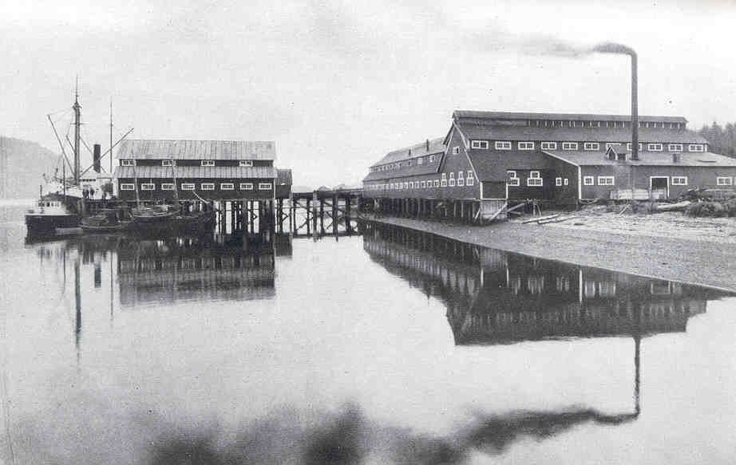
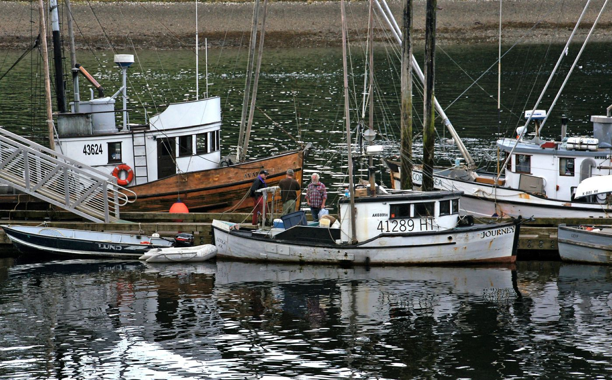

Directory / Southeast Alaska / Hoonah, AK
Hoonah tides — Port Frederick & Icy Strait
High and low tides for the coming week from NOAA station 9452438 (Hoonah, Port Frederick — 58.1076, -135.4442). Times are local (AKST/AKDT). Heights are feet above Mean Lower Low Water (MLLW). Hoonah sits just inside Port Frederick, off Icy Strait on the northeast side of Chichagof Island. It is about 40 air miles west of Juneau and roughly 55 miles by boat from Auke Bay. No road reaches it. People come by Alaska Seaplanes, by state ferry, or on their own boats, and from May to September cruise ships call at Icy Strait Point, just north of town. The Tlingit name is Xunaa, “lee of the north wind.” In 1912 the Hoonah Packing Co. built a cannery north of town. It packed its last full season in 1953, and the restored buildings now house the Icy Strait Point visitor site. Hoonah’s own fleet of seiners, trollers and longliners works out of the harbor on Front Street.
A 22-ft tide drop, a 220-ton Travelift, two harbors & a windy run to Juneau
The tide swing. NOAA lists 9452438 as a harmonic (reference) station, so its predictions are computed for Hoonah directly, not as offsets from Juneau. The station metadata shows the harmonics come from a short NOAA water-level gauge that ran in Port Frederick from October 31 to December 6, 2009. In the NOAA predictions fetched 2026-11-24, Wednesday, November 25, 2026 has an 18.1 ft high at 12:53 PM and then a −4.1 ft low at 7:40 PM. That is a drop of about 22.2 ft in under seven hours, roughly 6 ft more than at Pelican on the same afternoon. Christmas Eve matches it: 18.0 ft at 12:43 PM down to −4.2 ft at 7:32 PM, the lowest tide left this year. Minus tides fall every evening Nov 25–29, Dec 5–12 and Dec 20–28, mostly between about 4 PM and 11 PM, after dark. Leave plenty of scope, and check your lines and the ramp angle before a big ebb.
Haul-out. The city’s Hoonah Marine Industrial Center (HMIC) beside the ferry terminal runs a 220-ton Travelift. Hoonah’s 2017–2027 economic plan calls it the largest haul-out in northern Southeast Alaska. The city’s 2026 rates for a round-trip haul are $18.25/ft up to 70 ft, $20/ft for 71–89 ft and $30/ft for 90 ft and up, paid in advance, plus city sales tax. You get 10% off if the boat is in the slings for 2 hours or less. Add a $1.50/ft environmental fee and $5/ft for a pressure wash. Off-season yard storage (Aug 1–Apr 14) is $0.50/ft per day with a 40-ft minimum, and storage over three days is half price while you are actively working on the boat. Book through the harbor office. The best daylight lows over the next five weeks are only about 1.2 ft at 3:11 PM Sat Dec 19 and 2.0 ft at 3:15 PM Thu Dec 3, just before the roughly 3:25 PM sunset.
Harbor & fuel. Hoonah has two harbors. ADF&G describes the inner George Hall Harbor as having about 230 berths, a transient dock and a newer visitor dock for larger boats. The outer City Dock is used for loading and unloading. Harbormaster Andy Gray answers at 907-945-3670 or on VHF 16 (the National Fisherman guide also lists channels 9 and 14), and the office is open Mon–Fri 8–4. Under the 2026 rates, transient moorage is $1.00/ft a day under 80 ft and $2.00/ft over 80 ft. A week costs the same as 5 days, and a month is $8.05/ft. Fuel comes from Hoonah Fuel (Hoonah Trading Co., 907-945-3211, VHF 11). The harbor has metered showers, laundry and fresh water. The 2017 Northwest Boat Travel guide says to enter inside Pitt Island, and notes a white buoy flashing every 2 seconds in Port Frederick that marks the no-wake zone.
Weather. api.weather.gov puts the station and the mouth of Port Frederick in PKZ021 Icy Strait. Run east past Point Adolphus toward Chatham Strait and you are in PKZ032 Northern Chatham Strait. The forecasts issued at 7:57 PM Tuesday, Nov 24, 2026 call for E wind 20 kt and 5-ft seas tonight in Icy Strait, easing to E 15 kt and 3 ft Wednesday and Thursday, with no advisory. The legs on either side are rougher. Cross Sound (PKZ022) has a Small Craft Advisory through late tonight with gusts to 40 kt. Southern Lynn Canal (PKZ013) has advisories tonight and again late Wednesday, with N 35 kt near Point Couverden, which is on the usual run to Juneau. At 9:02 PM the Rocky Island station at the east end of Icy Strait was already reading N 36 kt with gusts to 45. Check the live forecasts below before you leave Port Frederick.
Computed from NOAA CO-OPS hi/lo predictions for 9452438 (2026-11-25 through 2026-12-31) and its station metadata (harmonic reference station; gauge dates 2009-10-31 to 2009-12-06); NWS Juneau coastal waters forecast text for PKZ021, PKZ032, PKZ022 and PKZ013; api.weather.gov zone lookups at 58.105,-135.45, 58.13,-135.47, 58.15,-135.50 and 58.20,-135.30 (PKZ021) and 58.10,-135.00 and 58.00,-134.90 (PKZ032); FAA WeatherCams site data for sunrise and sunset; City of Hoonah harbor page, 2026 harbor rates and 2026 HMIC/Travelift rates; ADF&G Hoonah Harbor sheet; National Fisherman Pilothouse Guide; the Northwest Boat Travel guide (2017). All checked 2026-11-24. Not for navigation.
Hoonah then & now
Historic


Current

.jpg){kind=link}
Official NOAA predictions Station home NOAA chart viewer NOAA chart 17302 viewer View on Windy
Port Sponsor — Hoonah, AK
Top placement for fish buyers, the boatyard trades, fuel, lodges, charters and marine businesses on Port Frederick and Icy Strait.
$25–$50 / month
Tide data: NOAA CO-OPS station 9452438 (Hoonah, Port Frederick; harmonic reference station), predictions (hi/lo, MLLW, local standard/daylight time). Refreshed with each nightly build; the marine-weather snapshot time below shows the latest fetch. For nearby ports, see Pelican tides, Elfin Cove tides and Juneau tides, and Gustavus tides (Bartlett Cove, Glacier Bay, NOAA 9452534).
Saturday, November 28, 2026
| Tide | Time (local) | Height (MLLW) |
|---|---|---|
| High | 3:45 AM | 14.1 ft |
| Low | 9:23 AM | 3.8 ft |
| High | 3:18 PM | 16.0 ft |
| Low | 10:06 PM | -1.7 ft |
Sunday, November 29, 2026
| Tide | Time (local) | Height (MLLW) |
|---|---|---|
| High | 4:39 AM | 13.7 ft |
| Low | 10:24 AM | 4.2 ft |
| High | 4:15 PM | 14.5 ft |
| Low | 11:01 PM | -0.3 ft |
Monday, November 30, 2026
| Tide | Time (local) | Height (MLLW) |
|---|---|---|
| High | 5:39 AM | 13.5 ft |
| Low | 11:35 AM | 4.3 ft |
| High | 5:23 PM | 13.0 ft |
Tuesday, December 1, 2026
| Tide | Time (local) | Height (MLLW) |
|---|---|---|
| Low | 12:02 AM | 1.0 ft |
| High | 6:43 AM | 13.6 ft |
| Low | 12:53 PM | 4.0 ft |
| High | 6:47 PM | 11.9 ft |
Wednesday, December 2, 2026
| Tide | Time (local) | Height (MLLW) |
|---|---|---|
| Low | 1:04 AM | 2.1 ft |
| High | 7:46 AM | 13.9 ft |
| Low | 2:07 PM | 3.1 ft |
| High | 8:15 PM | 11.4 ft |
Thursday, December 3, 2026
| Tide | Time (local) | Height (MLLW) |
|---|---|---|
| Low | 2:07 AM | 3.0 ft |
| High | 8:44 AM | 14.4 ft |
| Low | 3:15 PM | 2.0 ft |
| High | 9:33 PM | 11.6 ft |
Friday, December 4, 2026
| Tide | Time (local) | Height (MLLW) |
|---|---|---|
| Low | 3:08 AM | 3.6 ft |
| High | 9:35 AM | 14.9 ft |
| Low | 4:13 PM | 0.8 ft |
| High | 10:36 PM | 12.1 ft |
Saturday, December 5, 2026
| Tide | Time (local) | Height (MLLW) |
|---|---|---|
| Low | 4:04 AM | 3.9 ft |
| High | 10:21 AM | 15.3 ft |
| Low | 5:01 PM | -0.2 ft |
| High | 11:27 PM | 12.6 ft |
Marine weather & cameras
NWS marine forecast — Icy Strait (PKZ021)
Issued 217 PM AKST Fri Nov 27 2026. Snapshot fetched 2026-11-27 21:23 AKST from NWS text product. Official zone forecast · Raw text
- .TONIGHT...SW wind 15 kt. Seas building to 3 ft. Rain early in the evening.
- .SAT...SE wind 10 kt. Seas 2 ft or less. Rain in the morning.
- .SAT NIGHT...S wind 10 kt in the evening becoming light. Seas 2 ft or less. Rain in the evening.
- .SUN...NE wind 10 kt. Seas 2 ft or less.
- .SUN NIGHT...NE wind 15 kt. Seas 3 ft.
- .MON...E wind 15 kt. Seas 3 ft.
- .TUE...E wind 25 kt. Seas 3 ft.
- .WED...SE wind 25 kt.
NWS marine forecast — Northern Chatham Strait (PKZ032)
Issued 217 PM AKST Fri Nov 27 2026. Snapshot fetched 2026-11-27 21:23 AKST from NWS text product. Official zone forecast · Raw text
- .TONIGHT...S wind 10 kt. Seas building to 3 ft late.
- .SAT...S wind 10 kt. Seas 2 ft or less. Rain.
- .SAT NIGHT...SE wind 10 kt in the evening becoming light. Seas 2 ft or less. Rain in the evening. Patchy fog late.
- .SUN...N wind 15 kt. Seas 3 ft.
- .SUN NIGHT...N wind 15 kt. Seas 3 ft.
- .MON...N wind 15 kt. Seas 3 ft.
- .TUE...SE wind 25 kt. Seas 3 ft.
- .WED...SE wind 20 kt.
Nearby NDBC observation — Rocky Island (RIXA2, Marine Exchange of Alaska, Icy Strait, about 13 NM ENE)
wind 170°, 13 kt, gust 16 kt, air 42°F
Observation time 2026-11-27 21:02 AKST (converted to AKST). Attribution: NOAA NDBC station RIXA2. Snapshot fetched 2026-11-27 21:23 AKST.
Nearby NDBC observation — Gustavus Dock (GUXA2, Marine Exchange of Alaska, about 20 NM NNW across Icy Strait)
wind 150°, 5 kt, gust 6 kt, air 42°F, 1018.2 hPa
Observation time 2026-11-27 21:02 AKST (converted to AKST). Attribution: NOAA NDBC station GUXA2. Snapshot fetched 2026-11-27 21:23 AKST.
Nearby NDBC observation — Naked Island (NKXA2, Marine Exchange of Alaska, east end of Icy Strait, about 18 NM ENE)
wind 180°, 13 kt, gust 17 kt, air 43°F, 1017.2 hPa
Observation time 2026-11-27 21:02 AKST (converted to AKST). Attribution: NOAA NDBC station NKXA2. Snapshot fetched 2026-11-27 21:23 AKST.
Harbor webcams
- FAA WeatherCams — Hoonah (four cameras at the Hoonah airport, looking east, southeast, south and west over the town, Port Frederick and the hills; link only, not embedded)
- FAA WeatherCams — Gustavus Dock (looking west from the Gustavus dock across Icy Strait, about 20 NM north-northwest; a quick check on conditions in the strait)
The FAA camera-site pages for Hoonah (site 418) and Gustavus Dock (232) loaded on 2026-11-24 around 9:20 PM AKST. All four Hoonah cameras had posted images within the previous few minutes. FAA site data showed sunrise about 8:11 AM and sunset about 3:25 PM AKST at Hoonah for Nov 25, so expect dark frames on winter nights. We found no other free public camera on the Hoonah harbor. Lodges or businesses with a public cam: email us and we will link it.
Hoonah boater notes (official links)
- City of Hoonah — Harbor: Harbormaster Andy Gray (907-945-3670, cell 907-203-1317), Assistant Harbormaster John Thein (cell 907-203-1315) and Harbor Assistant Atti Wark. The page links the 2026 harbor rates and the HMIC landfill staging agreement. The office is at 300 Front Street (PO Box 360) and is open Mon–Fri 8–4, according to the regional SREC directory.
- City of Hoonah 2026 harbor rates: transient $1.00/ft a day under 80 ft and $2.00/ft over 80 ft; weekly = 5 days; monthly $8.05/ft; 3 months $17.25/ft. Water or road towing $150/hr (1-hr minimum), pumping $100/hr, trailer rental $75–$100 a day. Commercial users need a loading permit to work off city docks.
- HMIC & 220-ton Travelift 2026 rates: haul-out paid in advance; after-hours surcharge $5.75/ft (30-ft minimum); high-season storage (Apr 15–Jul 31) $1.25/ft a day; boats stored more than two years are evicted.
- ADF&G Hoonah Harbor sheet: two harbors (George Hall inner harbor, about 230 berths, and the City Dock outer harbor); fuel, showers, water, laundry, fish-cleaning tables, oil disposal, haul-out and power; launch ramp and parking.
- National Fisherman Pilothouse Guide — Hoonah: harbor email hoonahharbor@gmail.com; VHF 16, 9 and 14; 30 A ($7.50/day minimum) and 50 A ($20/day minimum) power; pressure washer; dry storage; aluminum and fiberglass repair, divers and portable welders in town; U.S. Customs call-in 907-586-7211. Some fees in the guide may be older than the city’s 2026 rates, so use the city’s numbers.
- FAA Hoonah Seaplane Base (OOH) and Hoonah Airport (HNH / PAOH): both unattended, CTAF 122.7, no aviation fuel listed, and both carry an active FAA construction notice in November 2026. The seaplane operating area is in Port Frederick off town, so give floatplanes room.
- ADF&G 2026 Southeast shore-based processors by port: Hoonah Cold Storage (F9173) is the only shore-based processor listed for Hoonah. NOAA Fisheries’ 2025 federal processor permit list also shows it (permit 32927).
- NOAA ENC chart viewer and chart 17302 (Icy Strait and Cross Sound, which covers Port Frederick and Hoonah at 1:80,000), plus chart 17300 for Stephens Passage to Cross Sound. We link to NOAA’s viewers and do not host charts.
Local marine & shore directory
Verified public listings only. List free · Get featured
Marine services
Moorage & marinas
Seafood processors & buyers
Fuel docks
Shipyards & haul-outs
Boat repair & mechanics
Marine suppliers & chandleries
Electronics sales & installation
No verified listing yet — list your business free.
Welding & fabrication
No verified listing yet — list your business free.
Canvas & upholstery
No verified listing yet — list your business free.
Surveyors
Towing & salvage
Ice & bait
No verified listing yet — list your business free.
Fishing charters
Ashore for boaters
Groceries & provisioning
Hardware
No verified listing yet — list your business free.
Liquor stores
Laundromats
Showers
Lodging
Restaurants
Medical clinics
Pharmacies
No verified listing yet — list your business free.
Post office & shipping
Airport & floatplane
Propane
Auto & truck rental
We checked these listings on 2026-11-24 against public sources: the City of Hoonah harbor page, 2026 rate sheets and local business directory; the ADF&G 2026 Southeast shore-based processor map and NOAA Fisheries’ 2025 federal processor permit list; the ADF&G Hoonah Harbor sheet; the National Fisherman Pilothouse Guide; North Pacific Trading (Hoonah Trading Co. and Hoonah Fuel); the FAA airport records for HNH and OOH; USPS; SEARHC; and each business’s own website where one exists. Hoonah Cold Storage is the only licensed shore-based processor in town. Smokey’s is a small smoked-fish and coffee shop. Many tour and charter businesses run only in the cruise season (May–September), and some shops keep short winter hours, so call ahead or hail the harbor on VHF 16. Basic listings are free; a Featured listing is $10/month or $100/year. For corrections or a free listing, contact J.L. Miller at pacifictides.ak@gmail.com (email only).
Local news — Hoonah, AK
Plain links to local outlets. Always check the source for the latest. Local news partners welcome.
Free weekly tides & marine weather
Get a short email for your port. We do not sell your email. Privacy.
Mailing list powered by Buttondown.
Boating gear on Amazon
As an Amazon Associate I earn from qualifying purchases.
Helpful search links for common gear. Prices and availability are on Amazon.
Other Alaska ports
- Angoon tides
- Tenakee Springs tides
- Gustavus tides
- Pelican tides
- Elfin Cove tides
- Craig tides
- Haines tides
- Skagway tides
- Juneau tides
- Yakutat tides
- Sitka tides
- Petersburg tides
- Wrangell tides
- Ketchikan tides
- Cordova tides
- Prince William Sound ports overview
- Valdez tides
- Whittier tides
- Kenai tides
- Homer tides
- Kodiak tides
- Dutch Harbor tides
- Unalaska tides
Sources
- Tide predictions: NOAA CO-OPS station 9452438 Hoonah, Port Fredrick via the CO-OPS data API (hi/lo, MLLW, local time); station metadata from the CO-OPS MDAPI (harmonic reference station)
- Marine forecasts: NWS Juneau coastal waters text products PKZ021 and PKZ032; zones confirmed with api.weather.gov point lookups on 2026-11-24 (no active alerts for either zone at fetch time)
- NDBC observations: RIXA2 Rocky Island, GUXA2 Gustavus Dock and NKXA2 Naked Island (Marine Exchange of Alaska); the refresh shows a station as unavailable when its latest report is more than a day old
- Harbor: City of Hoonah harbor page, 2026 harbor rates, 2026 HMIC & Travelift rates and local business directory; ADF&G Hoonah Harbor sheet; National Fisherman Pilothouse Guide; Northwest Boat Travel guide (2017); Hoonah 2017–2027 Economic Development Plan — all checked 2026-11-24
- FAA WeatherCams public camera pages for Hoonah (site 418) and Gustavus Dock (232); FAA NFDC airport records HNH and OOH — checked 2026-11-24
- ADF&G 2026 Southeast Alaska shore-based processors by port; NOAA Fisheries 2025 federal processor permits
- History: Wikipedia, “Hoonah, Alaska” (Tlingit name, 1912 cannery, 1953 last canning season); Icy Strait Point
- Directory:
data/businesses.csvrows for port_slug=hoonah, each with its public source URL (verified 2026-11-24) - Photos: John N. Cobb, 1917 (public domain, Freshwater and Marine Image Bank), and Bernard Spragg, 2012 (CC0), via Wikimedia Commons. Graphics: original Pacific Tides artwork (Port Frederick mast, Travelift tide marker, humpback fluke).